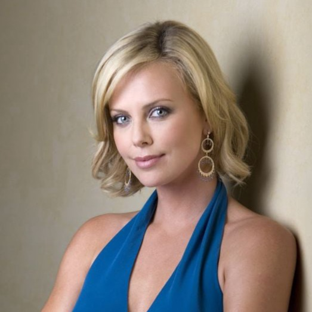

Charlize Theron
Born: 01 August 1975
Age:
Years Active: 1995-present
Charlize Theron (born 7 August 1975) is a South African and American actress and producer. One of the world's highest-paid actresses, she is the recipient of various accolades, including an Academy Award and a Golden Globe Award. In 2016, Time named her one of the 100 most influential people in the world.
She came to international prominence in the 1990s by playing the leading lady in the Hollywood films The Devil's Advocate (1997), Mighty Joe Young (1998), and The Cider House Rules (1999). She received critical acclaim for her portrayal of serial killer Aileen Wuornos in Monster (2003), for which she won the Silver Bear and Academy Award for Best Actress, becoming the first South African to win an acting Oscar. She received another Academy Award nomination for playing a sexually abused woman seeking justice in the drama North Country (2005).
She has starred in several commercially successful action films, including The Italian Job (2003), Hancock (2008), Prometheus (2012), Mad Max: Fury Road (2015), Atomic Blonde (2017), and The Old Guard (2020), as well as several Fast & Furious installments: The Fate of the Furious (2017), F9 (2021), and Fast X (2023). She received praise for playing troubled women in Jason Reitman's comedy-dramas Young Adult (2011) and Tully (2018), and for portraying Megyn Kelly in the biographical drama Bombshell (2019) she received her third Academy Award nomination.
Since the early 2000s, she has ventured into film production with her company Denver and Delilah Productions. She has produced numerous films, many in which she had a starring role, including The Burning Plain (2008), Dark Places (2015), and Long Shot (2019). Theron became an American citizen in 2007, while retaining her South African citizenship.
.webp )
Apex (2026)
.webp )
The Old Guard 2 (2025)
.webp )
The Old Guard (2020)

The Addams Family (2019)

Atomic Blonde (2017)

The Fate of the Furious (2017)

The Huntsman: Winter's War (2016)

Mad Max: Fury Road (2015)

Prometheus (2012)
.webp )
Snow White & the Huntsman (2012)